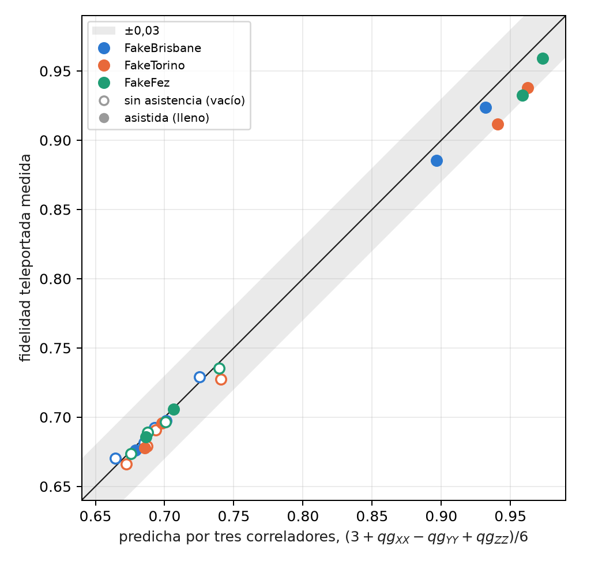
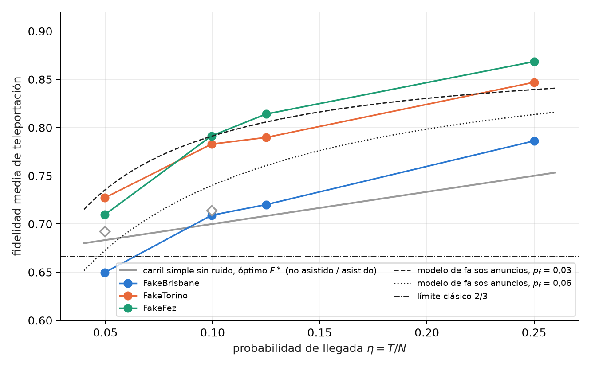
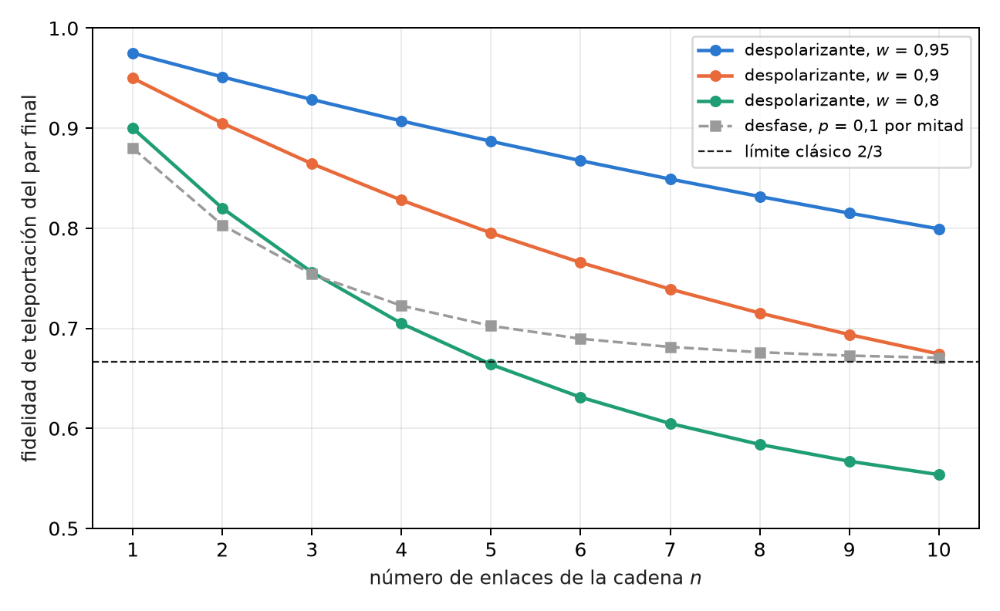

13 Doble carril, filtro de sector y fidelidad a larga distancia
El capítulo 12 terminó con una limitación: el filtro qg no ayudaba contra el ruido de los dispositivos, porque el circuito de teleportación no conserva el peso. Este capítulo hace las dos preguntas que siguen. La primera es si la fidelidad que va a dar un recurso se puede leer antes de teleportar, con pocas mediciones; la respuesta es sí, con tres correladores qg. La segunda es qué pasa si todas las compuertas conservan el número de fotones; la respuesta es el doble carril, en el que el filtro anuncia cada pérdida, y que a 20 km supera al óptimo sin ruido de carril simple hasta que los falsos anuncios ponen un piso. El capítulo cierra la Parte IV con el intercambio de entrelazamiento en cadena, leído con los mismos correladores.
13.1 Desde la base: tres lecturas qg predicen una fidelidad
Cada correlador de dos qubits es una lectura qg como las del capítulo 1: la paridad de dos bits medidos en una base, \(qg_{PP}=1-2P(\text{paridad impar})\), con su lectura en m-qg y su barra de error \(\sqrt{(1-qg^2)/N}\). El capítulo 12 mostró que la fidelidad con \(|\Phi^+\rangle\) es lineal en tres de ellos; la fidelidad media de teleportación también (§158):
\[ F=\frac{3+qg_{XX}-qg_{YY}+qg_{ZZ}}{6}. \]
Es una lectura lineal del recurso solo, sin la medición de Bell: tres circuitos con 4–5 compuertas de dos qubits, contra 10–11 de la teleportación. Al ser lineal, su barra de error es la combinación de las tres: con \(N\) disparos por correlador, \(\sigma_F=\sqrt{\sum(1-qg^2)/N}/6\), unos 0,0025 con \(N=10\,000\) cerca de \(F\approx0{,}7\).
13.2 La fidelidad desde tres correladores
En los cuatro enlaces del capítulo 12, con los dos protocolos y en tres modelos de ruido simulados, se comparó la fidelidad predicha por los correladores con la teleportada. En las 24 combinaciones la diferencia es como máximo 0,029 (Figura 13.1): tres circuitos cortos predicen la fidelidad teleportada.

Las predicciones registradas querían algo más: que la diferencia aislara el ruido de la medición de Bell. Eso falló. La predicción quedó por debajo del óptimo sin ruido en 5 de 24 casos (A1), no siempre por encima de la teleportada (A2, 3 de 24, todos dentro de dos errores de disparo) y la diferencia no siempre fue mayor con asistencia (A3, 2 de 12). La razón es que los tres circuitos de correladores leen dos qubits de datos y el anuncio, así que llevan casi todo el ruido que ve la teleportación. Sirven como predictor, no como descomposición.
13.3 Doble carril: cada pérdida se anuncia
En carril simple, un qubit es un fotón presente o ausente, y perder el fotón convierte un \(|1\rangle\) en un \(|0\rangle\) válido: la pérdida no se ve. En doble carril, cada qubit es un fotón en dos modos, \(|0_L\rangle=|10\rangle\) y \(|1_L\rangle=|01\rangle\). Las compuertas lógicas se construyen para conservar el número de fotones: el CNOT lógico es un SWAP controlado de los modos del blanco, el CZ lógico un CZ entre modos, y las compuertas de un qubit actúan sobre el subespacio \(\{|10\rangle,|01\rangle\}\). Toda pérdida deja el par de Bob con peso 0, y el filtro qg (peso 1 en cada par) anuncia todas las pérdidas, la de la fibra incluida, sin ayuda de los otros usuarios.
Sin ruido de compuertas, el resultado es limpio:
\[ F_{\text{filtrada}}=1\ \text{a cualquier distancia},\qquad \text{conservado}=\eta,\qquad F_{\text{cruda}}=\frac{1+\eta}{2}, \]
donde la cruda supone que Bob adivina cuando no llega fotón, y queda por debajo del óptimo de carril simple \((2+\eta)/3\). El filtro convierte pérdida en tasa: la fidelidad no baja con la distancia, baja la cantidad de pares útiles. El precio es el circuito: 65–66 compuertas de dos qubits, seis veces las de carril simple.
13.4 Lo que mide el doble carril en dispositivos simulados
Con el par de Bell (\(\alpha=\pi/4\)), seis entradas y 10 000 disparos (§158), de las cinco predicciones del doble carril se cumplió una sola (B4: la cruda queda por debajo de carril simple en las 12 combinaciones, 0,516–0,595). Las otras cuatro fallaron, y la mayoría por la misma causa:
| dispositivo simulado | filtrada, (0 km, 1:4) → (20 km, 1:8) | conservado / \(\eta\) | 20 km: filtrada frente a \(F^\ast\) sin ruido de carril simple |
|---|---|---|---|
| FakeBrisbane | 0,786; 0,720; 0,709; 0,650 | 0,91 → 1,98 | 0,709 / 0,714 (1:4); 0,650 / 0,692 (1:8) |
| FakeTorino | 0,847; 0,790; 0,783; 0,727 | 0,97 → 2,14 | 0,783 / 0,714; 0,727 / 0,692 |
| FakeFez | 0,869; 0,814; 0,791; 0,710 | 0,98 → 1,74 | 0,791 / 0,714; 0,710 / 0,692 |
Los falsos anuncios ponen un piso (B1, B2 y B5 fallaron). Cuando el fotón se pierde, un error de compuerta o de lectura puede dejar igual el par de Bob con peso 1: a 20 km, \((\text{conservado}-\eta)/(1-\eta)\) es del 3 al 6%. Esos disparos llevan una fidelidad de alrededor de 1/2, y a medida que \(\eta\) baja pesan más entre los conservados. Con una probabilidad de falso anuncio \(p_f\), la fidelidad filtrada es
\[ F_{\text{filtrada}}=\frac{\eta\,F_0+(1-\eta)\,p_f/2}{\eta+(1-\eta)\,p_f}, \]
que cae con la distancia aunque el canal no agregue ningún error (Figura 13.2). Es el piso de cuentas oscuras de un enlace anunciado real, producido aquí por errores de compuerta y de lectura.

Aun así, anunciar gana a 20 km. En un análisis posterior, no registrado, en FakeTorino y FakeFez la filtrada de doble carril supera al óptimo de carril simple sin ruido en los dos divisores: 0,783 y 0,791 contra 0,714 con 1:4; 0,727 y 0,710 contra 0,692 con 1:8. Lo logra con seis veces las compuertas de dos qubits. La cruda pierde en todos lados (B4), así que la ganancia es del filtro. B3, la versión registrada de esa comparación (contra la teleportada con ruido), falló sólo en FakeBrisbane a (20 km, 1:8).
La comparación con el trabajo de variables continuas es cualitativa: allí la fidelidad es determinista y cae con la distancia y con \(N\); aquí el filtro mantiene alta la fidelidad y paga en tasa (conservado \(\approx\eta\)), hasta que los falsos anuncios, no la pérdida, ponen el límite.
13.5 Intercambio de entrelazamiento en cadena
Para ir más lejos que un enlace, una red encadena pares: un nodo intermedio hace una medición de Bell entre sus dos mitades, y los extremos quedan entrelazados (intercambio de entrelazamiento, entanglement swapping). Esta sección es nueva en el libro: es álgebra exacta de matrices densidad, verificada en el script de figuras, sin corrida en dispositivos.
Para pares diagonales en la base de Bell, que son los que dejan los ruidos de Pauli del capítulo 12, el resultado en qg es una regla de una línea: los correladores se multiplican. Después de intercambiar dos pares, con la corrección de Pauli que corresponde a cada resultado,
\[ qg_{PP}^{(1\to3)}=qg_{PP}^{(1\to2)}\cdot qg_{PP}^{(2\to3)},\qquad P\in\{X,Y,Z\}, \]
y en una cadena de \(n\) enlaces iguales, cada correlador queda elevado a la \(n\). Con pares despolarizados de parámetro \(w\) (\(qg_{XX}=qg_{ZZ}=w\), \(qg_{YY}=-w\)), la fidelidad de teleportación del par final es \(F=(1+w^n)/2\), y supera el límite clásico mientras \(w^n>1/3\), es decir, hasta \(n\le\ln3/\ln(1/w)\): 21 enlaces con \(w=0{,}95\), 10 con \(w=0{,}9\) y 4 con \(w=0{,}8\) (Figura 13.3).

La lectura por correladores dice además qué error se acumula. Con desfase, \(qg_{ZZ}=1\) en cada enlace y por lo tanto en toda la cadena, mientras \(qg_{XX}\) y \(qg_{YY}\) decaen como \(0{,}64^n\): el par final conserva las correlaciones en \(Z\) y pierde las de fase, y su fidelidad tiende a 2/3 desde arriba. Es la misma firma de la tabla de ruidos del capítulo 12, propagada por la cadena, y es la que decide dónde conviene destilar.
La conexión con el doble carril es directa: en una cadena de pares de doble carril, cada medición de Bell intermedia también conserva el número de fotones, y el filtro anuncia las pérdidas de todos los enlaces a la vez. Ese experimento no está hecho.
13.6 Lo que queda pendiente
Tres temas del índice no tienen todavía respaldo en el repositorio, y quedan como propuestas, no como resultados:
- el enrutamiento y la conmutación cuántica pasiva en topologías metropolitanas con varios portadores;
- una cadena de repetidores con doble carril y filtro en dispositivos simulados, que pondría a prueba la regla de multiplicación de esta sección con ruido real de compuertas;
- la teleportación de compuertas (gate teleportation) y su lectura en correladores qg.
13.7 Sin qang y con qang
| acción | sin qang | con qang | diferencia |
|---|---|---|---|
| predecir la fidelidad de teleportación | teleportar y medir (10–11 compuertas de dos qubits) | tres correladores del recurso (4–5 compuertas): error máximo 0,029 en 24 casos | a favor en costo de circuito; la fórmula es conocida, qang la vuelve una lectura lineal con barra de error |
| anunciar pérdidas | carril simple: la pérdida no se ve | doble carril con filtro de peso: toda pérdida se anuncia | del filtro y la codificación, no de la escala |
| propagar ruido por una cadena de intercambios | componer canales | los correladores qg se multiplican; \(F=(1+w^n)/2\) | a favor en claridad: una regla de una línea y la firma de qué error se acumula |
Balance. Los correladores qg son la parte de qang que más rinde en redes: predicen y propagan con reglas lineales. La ganancia grande del capítulo, el doble carril, es de la codificación y el filtro.
13.8 En código
from qang import qpon
# la fidelidad de teleportación, desde tres correladores del recurso
qpon.fidelity_from_correlators(xx=0.84, yy=-0.81, zz=0.73) # 0.897
qc = qpon.resource_circuit(alpha=1.231, transmission=1.0, n_users=8, basis="X")
# doble carril: formas cerradas sin ruido y el circuito de 8 qubits
qpon.dual_rail_fidelities(alpha=0.7854, eta=0.05) # filtrada 1.0, cruda 0.525, conservado 0.05
qc_dual = qpon.dual_rail_teleport_circuit(alpha=0.7854, eta=0.05, input_index=2)13.9 Resumen
- La fidelidad de teleportación es lineal en tres correladores qg del recurso, \(F=(3+qg_{XX}-qg_{YY}+qg_{ZZ})/6\); en 24 casos simulados predice la teleportada a 0,029, aunque no aísla el ruido de la medición de Bell.
- En doble carril todas las compuertas conservan el número de fotones y el filtro anuncia cada pérdida: sin ruido, \(F=1\) a cualquier distancia con tasa \(\eta\).
- Con ruido, los falsos anuncios (3–6% a 20 km) ponen un piso y la fidelidad filtrada cae con la distancia; aun así, en dos de tres modelos supera al óptimo sin ruido de carril simple a 20 km (análisis posterior).
- En una cadena de intercambios, los correladores de pares diagonales en Bell se multiplican; con despolarización, \(F=(1+w^n)/2\), y con desfase \(qg_{ZZ}\) sobrevive entero.
- Enrutamiento, repetidores en dispositivos y teleportación de compuertas quedan pendientes.
Notas bibliográficas
La codificación de doble carril en óptica lineal es la de Knill et al. (2001); el intercambio de entrelazamiento, Żukowski et al. (1993), y los repetidores cuánticos, Briegel et al. (1998). La teleportación de base es Bennett et al. (1993). Las notas de investigación numeradas (§) que cita el capítulo y los scripts que lo verifican están en el repositorio (Monteverde 2026a); la definición de la unidad qang, en Monteverde (2026b).